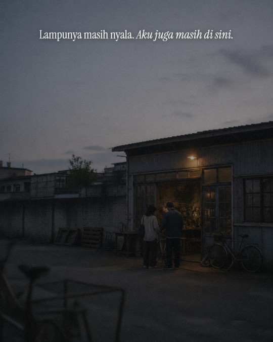
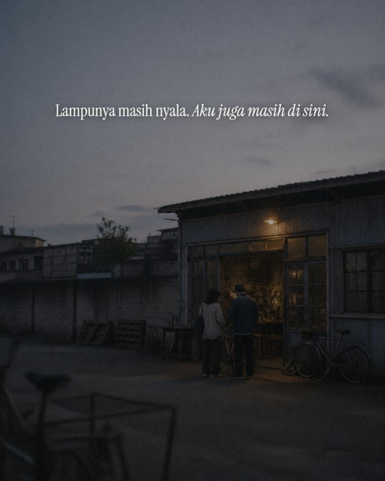

Teks sekarang di tengah area paling kosong foto. Area itu dihitung, bukan ditebak: alat 06_Automation_Kit/tools/ruang_kosong.py mengukur detail tiap pita horizontal dan mencari area kosong terbesar. Di foto ini hasilnya langit 8% sampai 38% tinggi, jadi kalimat ditaruh di tengahnya (23%).


Pilihanmu E (garis waktu dan teks di tengah + gradasi). Gradasinya sekarang lebih tebal (sampai 55% sage, sebelumnya 30%) dan ada 4 arah. Tiga slide berjejer seperti saat digeser.